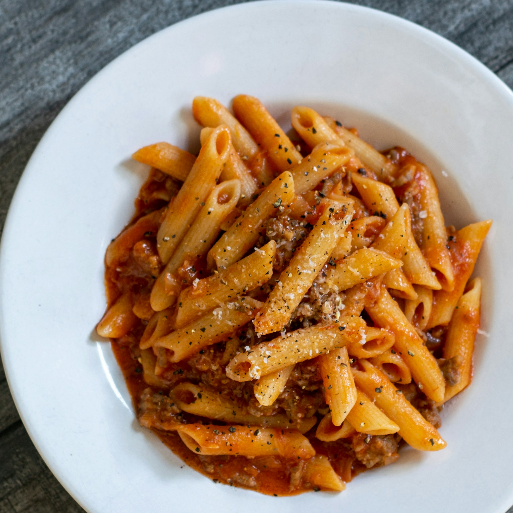

Penne z ragù w 30 minut
Jeden garnek, puszka pomidorów i pół godziny. Ten makaron robię, kiedy nie chce mi się gotować, a i tak chcę zjeść coś porządnego.

30minut
- Przygot.
- 10min
- Gotowanie
- 20min
- Porcje
- 4
- Kalorie
- 620kcal
Przygotowanie
6 kroków · około 30 minut
- 01Nastaw duży garnek osolonej wody na makaron.
- 02Cebulę posiekaj drobno, czosnek przeciśnij. Na oliwie zeszklij cebulę, dodaj czosnek i smaż jeszcze 30 sekund.
4 min - 03Dodaj mięso i smaż na dużym ogniu, rozbijając łyżką, aż się zrumieni.
6 min - 04Wmieszaj koncentrat, smaż minutę. Dodaj pomidory, oregano i chili. Duś na małym ogniu, dopraw solą i pieprzem.
10 min - 05W tym czasie ugotuj penne al dente według instrukcji na opakowaniu. Odlej pół szklanki wody z gotowania.
- 06Przełóż makaron do sosu, dolej trochę wody z gotowania i wymieszaj, aż sos oblepi makaron. Podawaj posypane tartym parmezanem.
Stuknij krok, żeby oznaczyć go jako zrobiony.
Mała rada
Nie wylewaj całej wody z makaronu. Skrobia z niej sprawia, że sos robi się kremowy i trzyma się penne, zamiast zostawać na dnie talerza.
Cześć, tu Adam
Gotuję po pracy, więc moje przepisy mają być szybkie, z produktów z osiedlowego sklepu i bez zmywania pięciu garnków. Tu zapisuję to, co u mnie wraca na talerz najczęściej.